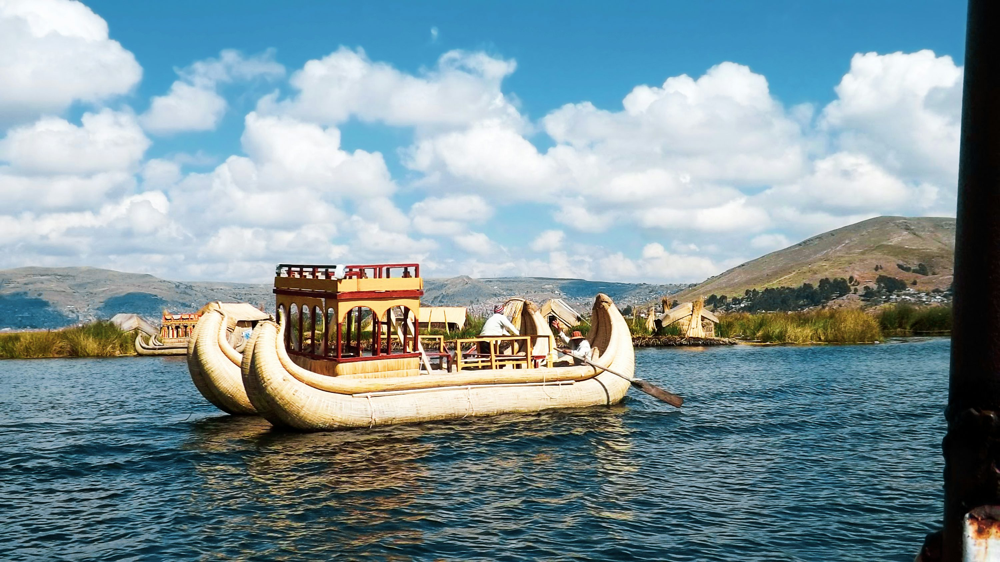
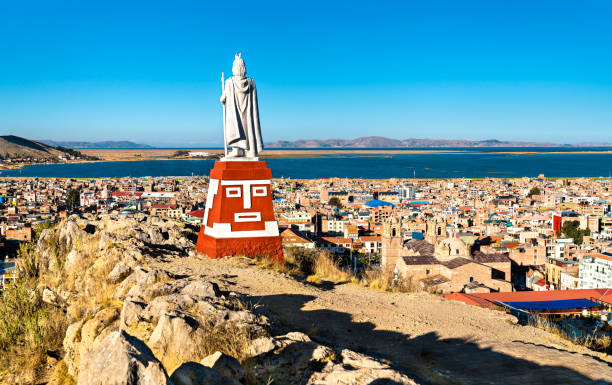
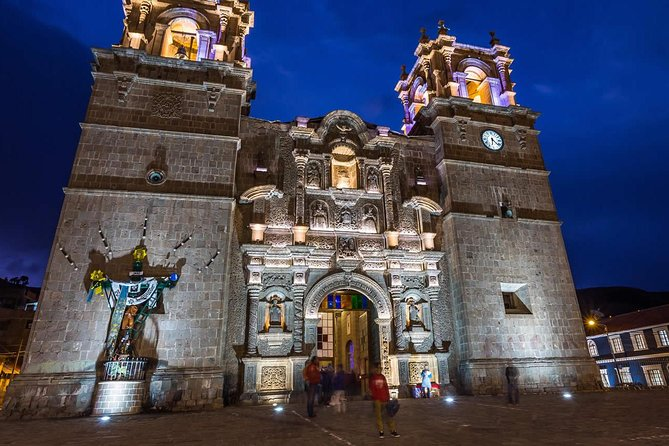
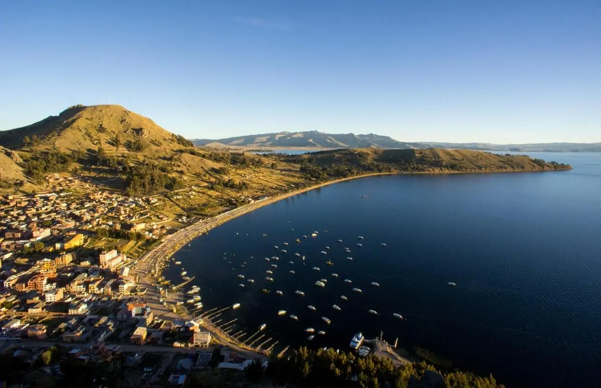
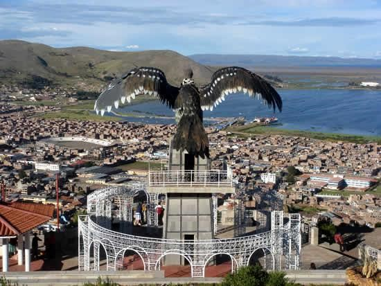

🚗 Ideal para:
- Amantes de culturas ancestrales
- Viajeros interesados en comunidades indígenas
- Exploradores de destinos únicos
🛣️ Ruta recomendada:
Arequipa – Juliaca – Puno
- Manejar con precaución por la altitud.
- Llevar agua y snacks para trayectos largos.

✨ Actividades destacadas:
- Visita a las Islas flotantes de los Uros
- Excursión a Taquile y Amantaní
- Fiesta de la Virgen de la Candelaria
🧭 Recomendaciones:
- Llevar bloqueador solar y sombrero
- Consumir mate de coca para la altura
- Respetar las costumbres locales
📸 Galería de Puno



